🩺
Disease Prevention & Treatment
Expanding access to healthcare, training local professionals and building the infrastructure that keeps communities healthy.
District 3150 • Hyderabad, India
Every act of giving begins with a simple decision — to care. For decades, the Rotary Club of Hyderabad Deccan has turned that decision into measurable impact: healthcare for families, education for children, dignity for women and hope for those who need it most.
A Legacy of Trusted Service
Established in 1988, the Rotary Club of Hyderabad Deccan is among the region's most respected and accomplished Rotary clubs. Our members include business leaders, professionals, prominent citizens and change-makers — united by one purpose: giving back meaningfully.
With deep experience and strong governance, the Club is known for turning ideas into action and donations into results.
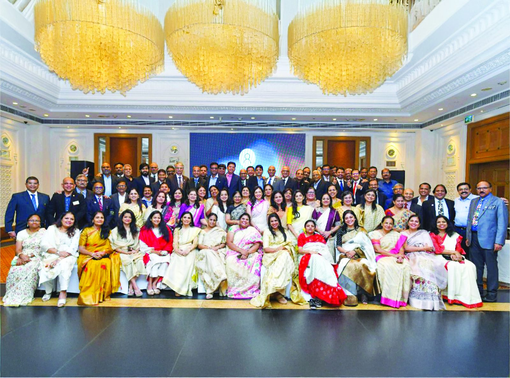
The Rotary Journey
What began as a small fellowship gathering in Chicago has become one of the world's most respected service movements — 1.4 million members across 46,000+ clubs worldwide, committed to solving real human challenges. Rotary is non-political, non-religious and united by one enduring principle: Service Above Self.
Of the things we think, say or do
Creating Impact. Changing Lives.
Every project we undertake is designed to solve real problems and create lasting outcomes across seven areas of focus.
Expanding access to healthcare, training local professionals and building the infrastructure that keeps communities healthy.
Building sustainable water systems and promoting hygiene education to protect children from preventable disease.
Reducing mortality among mothers and children under five, ensuring essential care from prenatal stages through infancy.
Supporting schools, libraries, teachers and adult literacy — giving people the tools to build their own futures.
Investing in entrepreneurs, training local leaders and building infrastructure that reduces poverty from the ground up.
Developing the skills to strengthen peace efforts and training local leaders to prevent and mediate conflict.
Supporting conservation, clean energy and sustainable land use as an act of service to future generations.
Our Signature Projects
From dialysis and diagnostics to clean water, livelihoods and life-changing surgeries — these are the projects that define our service.

Saving lives and reducing financial burden for thousands of households across Secunderabad and Guntur.

Affordable diagnostics, timely treatment and better lives — modern tests, scans and consultations at highly affordable rates.
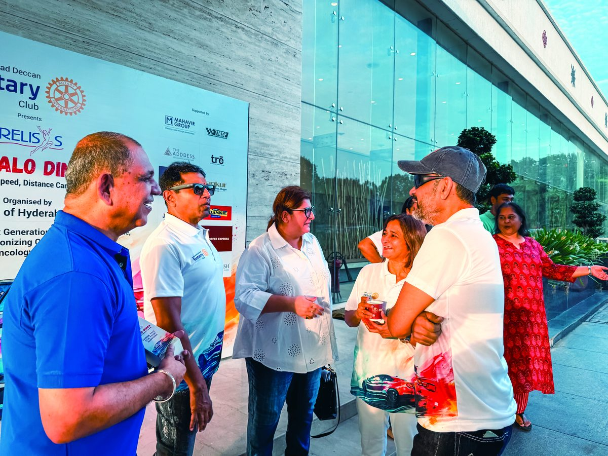
A basic hygiene initiative bringing dignity to school girls across Hyderabad and surrounding regions.

Structured tailoring training at Jeedimetla and Dhoolpet (with SETWIN) — turning skill into dignity, income and self-belief.

Empowering young women for careers and leadership through mentoring, interview readiness and confidence-building.
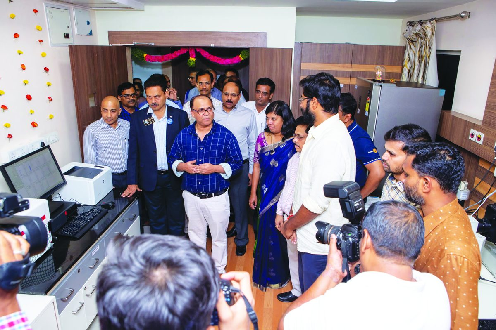
Faster, precise diagnosis at leading cancer institutions — giving hope to children and families facing cancer.
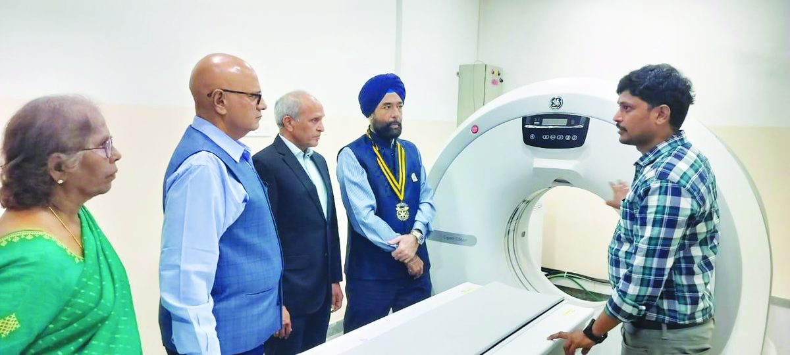
Critical imaging technology within reach for every family at the CR Foundation in Hyderabad.
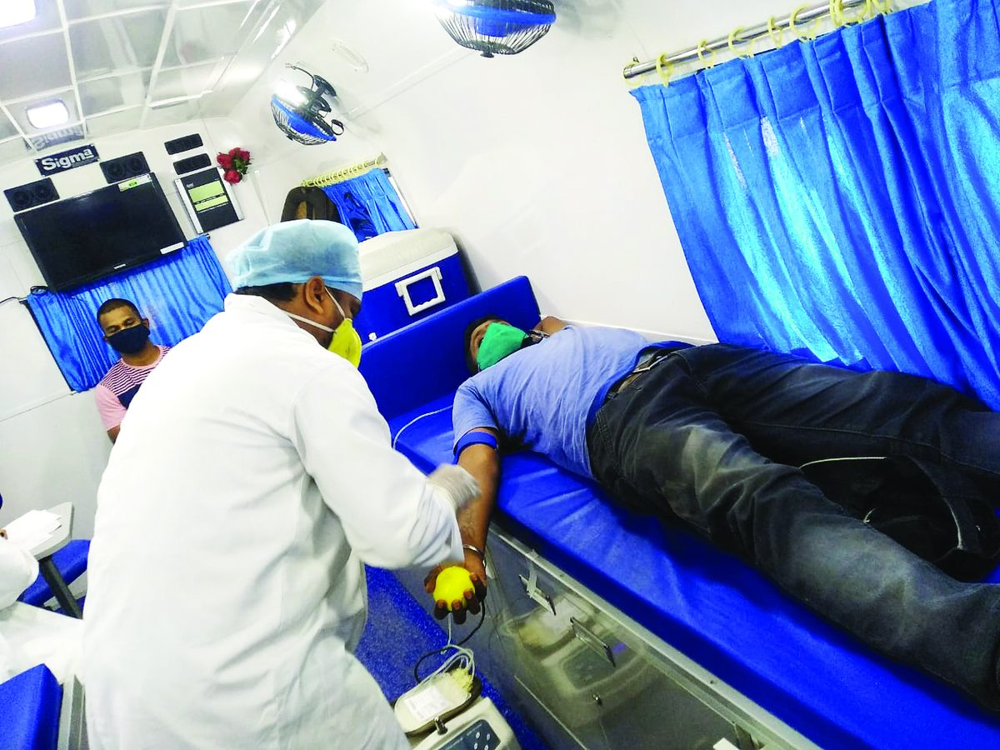
Timely blood transfusions for children with thalassaemia and economically-challenged patients who need them most.
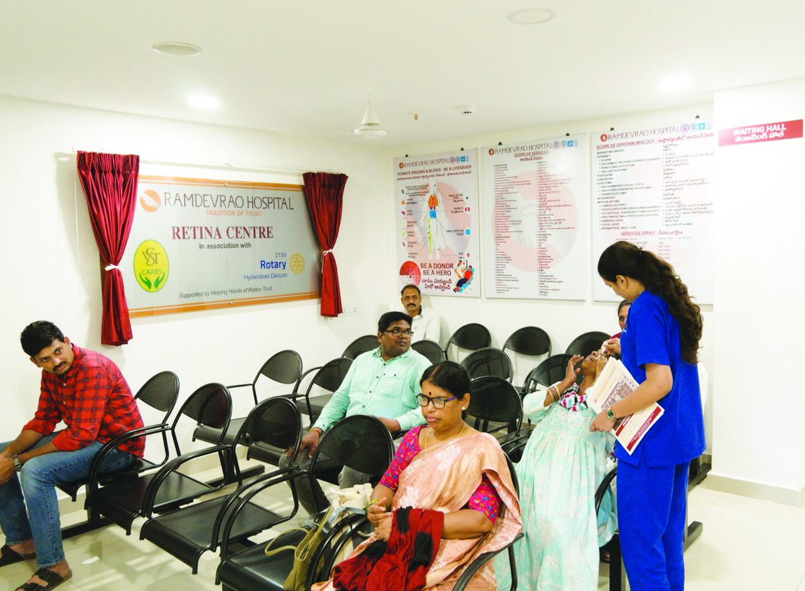
Safeguarding the greatest gift — sight. Specialised retina care and advanced eye surgeries made accessible at subsidised rates.
End Polio Now
Rotary chose to fight back. Through one of the largest public-health partnerships in history, Rotary helped immunise more than a billion children worldwide — protecting them from a debilitating disease and reducing polio cases by over 99%.
Partners in eradication: Rotary International · WHO · UNICEF · US CDC · National Governments worldwide
Our Annual Fundraisers
Bringing together Hyderabad's business leaders, professionals and families to show solidarity and support for causes that create impact.

Since 2016, one of the most prestigious events on Hyderabad's golfing calendar — hosted at the Hyderabad Golf Association, attracting 100+ golfers each year.
Projects enabled include the Dialysis Centre, Challa Blood Bank, flow cytometers, girls' toilets, the Retina Surgery Centre and the CR Foundation medical centre.

A Time-Speed-Distance precision navigation rally from Hyderabad to Dindi, where passion for motoring meets purpose.
Every registration, sponsorship and partnership helps fund life-saving community projects.

DARE — Deccan Assists Rotary Endeavours
DARE is a collaborative model that supports smaller rural and suburban Rotary clubs with funding, execution expertise and governance — built on a grassroots belief that the most durable change is the change a community drives for itself.
Regular Community Service
From blood-donation camps and tree plantation to blanket drives, wheelchair and cycle donations, and support for orphanages and old-age homes — service is a daily habit.

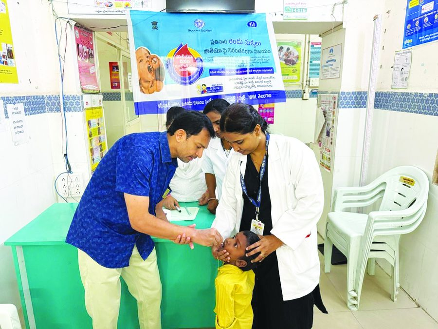
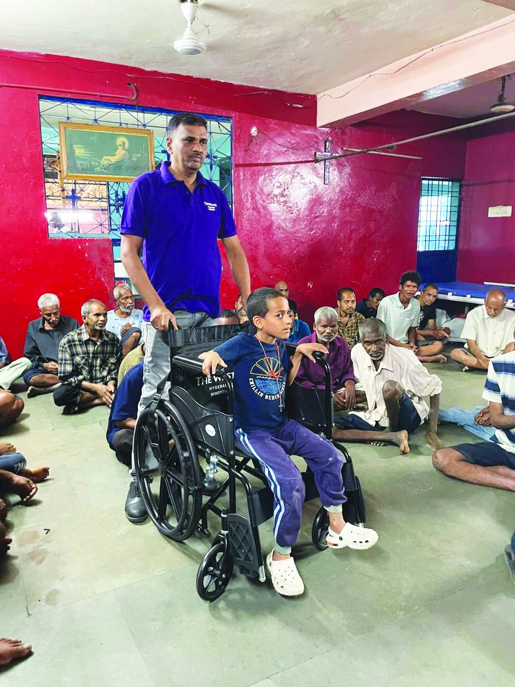
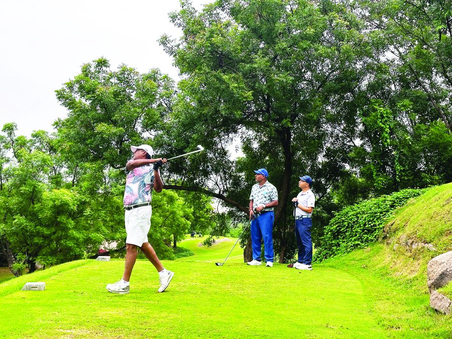
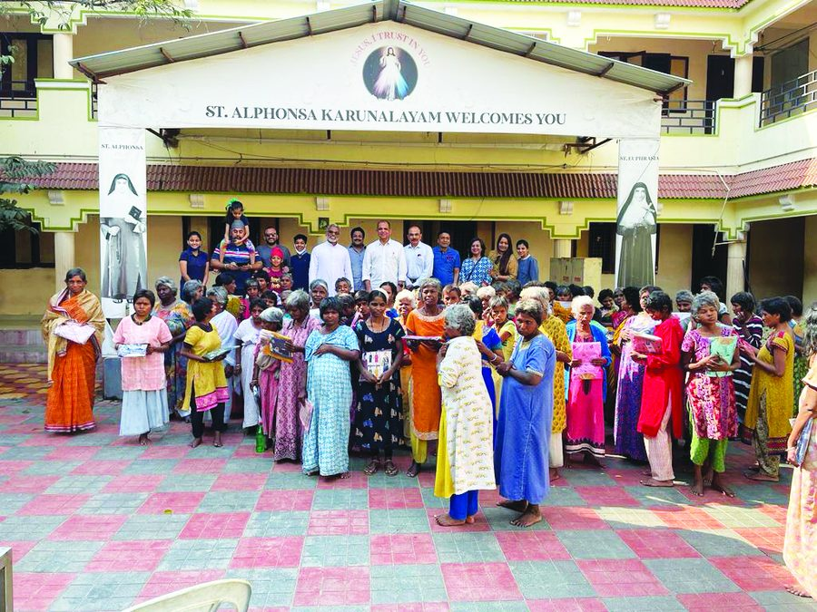
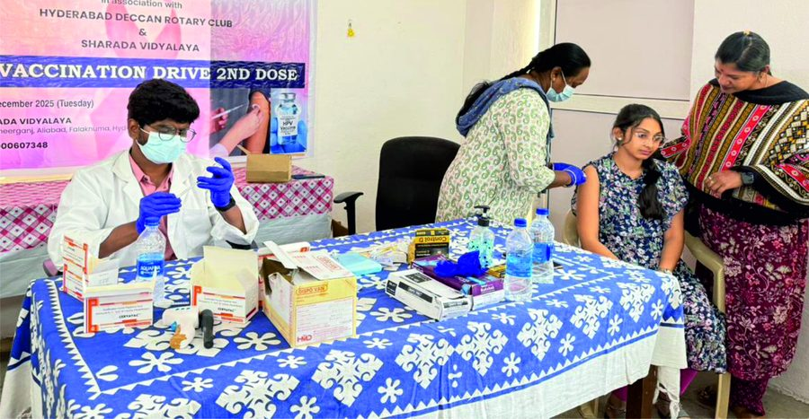
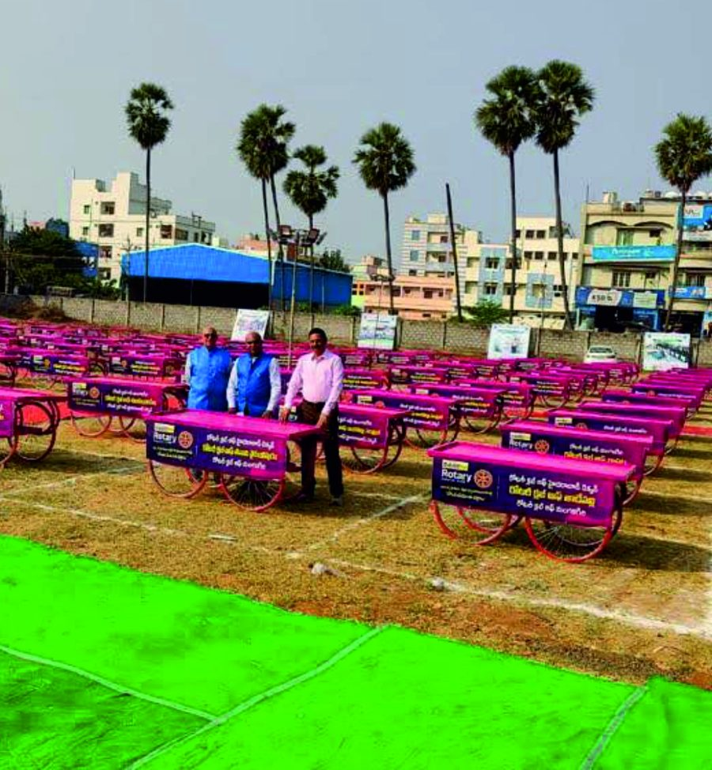
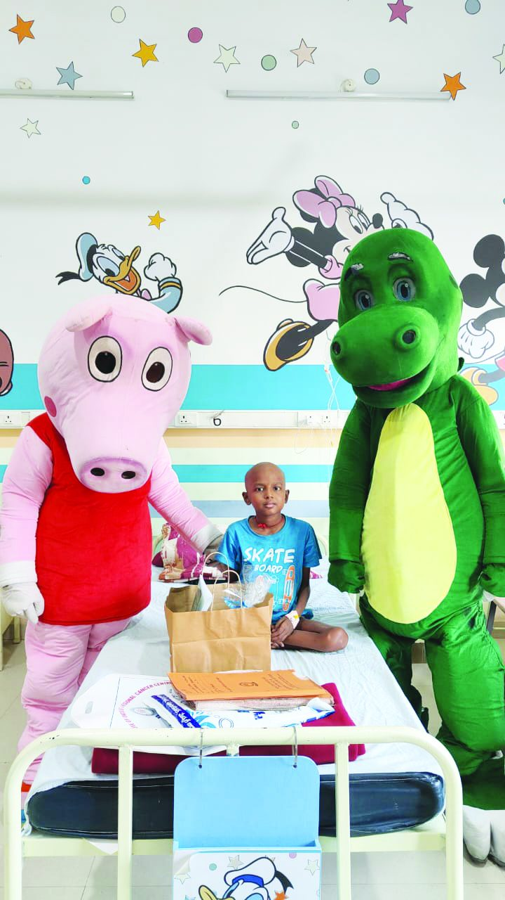
Helping Hands of Rotary Trust (HHRT)
HHRT ensures generosity reaches the ground efficiently, transparently and responsibly — directing contributions into carefully managed projects across healthcare, education, welfare and livelihoods.
Clear accounting and audited systems.
Funds directed to intended causes.
Complete 80G & CSR compliance support.
Meaningful updates and measurable outcomes.
Strong governance backed by Rotary values.
Eligible under Section 80G of the Income Tax Act.
Eligible for CSR partnerships · Registered for CSR project execution with the Ministry of Corporate Affairs · Currently only domestic donations are accepted.
Join Us
There is no shortage of need. What creates change is organised compassion backed by trusted execution. We invite you to be part of our mission.
Support healthcare, education, water and community infrastructure.
Directly fund urgent human needs and life-changing initiatives.
Associate your brand with respected, high-visibility platforms.
Create long-term impact in the name of your family or organisation.